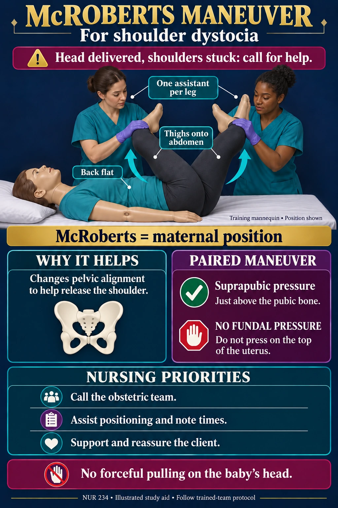

01 Recognize & call
Shoulder dystocia is an obstetric emergency.
The head has delivered but the shoulders do not follow normally. Call for help and follow the unit response.
NUR 234 · Shoulder dystocia
The picture to remember: the maternal thighs are brought back onto the abdomen. McRoberts is a positioning maneuver.

McRoberts = maternal position.
Suprapubic = pressure just above the pubic bone.
Fundal = pressure on the top of the uterus — do not use.
Shoulder dystocia is an obstetric emergency.
The head has delivered but the shoulders do not follow normally. Call for help and follow the unit response.
Back flat; hips deeply flexed.
The thighs move back onto the abdomen, with an assistant supporting each leg. McRoberts changes maternal pelvic alignment to help release the shoulder.
Suprapubic pressure is a separate maneuver.
It is often paired with McRoberts and is applied just above the pubic bone by the trained team.
No fundal pressure. No forceful head pulling.
Fundal pressure means pressing on the top of the uterus. It can worsen shoulder impaction. Avoid forceful, lateral or downward traction on the baby’s head.
Assist positioning, note times and reassure.
Use clear communication and document the event and maneuvers as directed. If the initial maneuvers do not work, the team promptly proceeds through its shoulder-dystocia protocol.
McRoberts and suprapubic pressure are commonly used first external maneuvers. They do not resolve every shoulder dystocia. Trained-team protocol and prompt escalation remain essential.
This graphic supports recognition for nursing study; hands-on technique is learned in supervised obstetric training.
Prepared October 7, 2026. The module's existing course text and quiz keys remain unchanged. This educational illustration is not a diagnostic image or a complete procedure checklist.